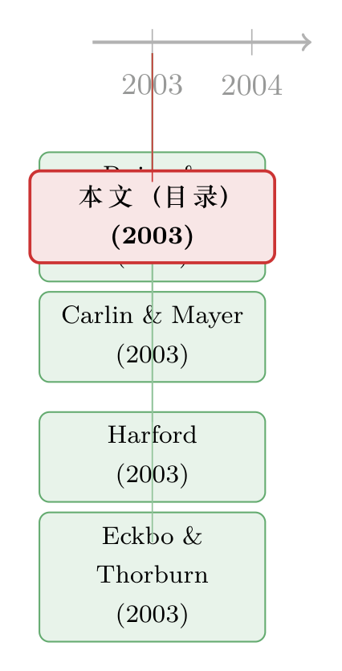

八行标题：一张目录，如何画下 2003 年公司治理的全景
本文读的是 《Special Issue: Tuck Symposium on Corporate Governance》(2003, Journal of Financial Economics) 的目录页：它本身不是一篇论文，没有数据、没有模型、没有一个回归系数；可它用八行标题和一串页码，恰好替我们把 2003 年的「公司治理」研究画成了一张地图——从大国的金融兴衰，到一间董事会里席位的得失，再到破产法庭上那场决定 CEO 命运的拍卖。
1 引言：当「论文」其实是一页目录
我们先把话说在前面：这一次要读的东西，严格来说连一篇论文都算不上。
它是一本期刊的「目录页」（Contents）——Journal of Financial Economics 在 2003 年为一场名叫 达特茅斯塔克研讨会（Tuck Symposium on Corporate Governance） 的会议出的一期特刊，把会上脱颖而出的八篇文章按页码列在一起。第 5 页起是第一篇，第 259 页起是最后一篇，中间夹着「Editorial data」「Preface」这样的事务性条目，末尾盖着一个出版印记 PII: S0304-405X(03)00162-4。没有摘要，没有图表，没有任何一个可供你抄进 slides 的数字。
那么，读它有什么意思？
意思恰恰在于：一张目录，是一个学科在某个瞬间的剖面。 它不告诉你任何一个具体结论，却替你框定了「在 2003 年，一群最好的公司金融学者认为，关于『谁来管住公司、怎么管』这件事，哪八个问题值得放进同一本特刊」。把这八行标题摊开来看，你会发现它们并不是随机拼凑的——它们彼此咬合，几乎拼出了「公司治理」这门学问的全部骨架。
（这并不是本博客第一次干这种「读一页纸」的事。同一卷年末的索引，我们也读过一回，见《卷末那一页：从一份「索引」里，读出 2003 年的金融学在想什么》；那是从「后门」看这一年，这一篇则是从「前门」看同一场研讨会。）
2 先认识这场研讨会
「Symposium」不是普通的投稿合辑。它通常是先有一场闭门研讨会，组织者点名邀请若干篇主题相关的工作，会上充分讨论、互相批评，再经正常审稿后集结成一期特刊。所以一期 symposium 的目录，往往比随机抽样更能反映「领域共识」——这些题目是被同行挑出来的，不是被运气撞出来的。
把目录里的八篇按内在逻辑重排，而不是按页码，公司治理的三条主线就浮出来了：
- 大图景——治理的「制度容器」：一国的金融体系为什么会兴、会衰？金融到底如何作用于投资与增长？
- 控制权市场——治理的「外部纪律」：收购、IPO 的股权结构，如何在公司之外约束（或纵容）管理层？
- 内部机制与破产——治理的「内部纪律」与「最后防线」：董事会、高管期权、以及当一切都失败、公司走进破产时，谁来惩戒 CEO？
下面我们就顺着这三条线，把八个标题一个个「点亮」。
3 第一条线：治理的「制度容器」
特刊把分量最重的位置（第 5 页，打头阵）给了 Rajan and Zingales (2003), The great reversals: the politics of financial development in the twentieth century。
这是一篇后来被反复引用的名作。它的核心张力是一个反直觉的史实：如果你以为金融发展是一条单调上升的曲线——越往现代越发达——那就错了。Rajan 与 Zingales 指出，许多国家在 1913 年前后（一战之前那一轮全球化的高点）拥有的金融市场深度，竟然要到几十年之后才被重新超越；中间是一段长长的「大倒退（great reversal）」。而决定这条曲线起落的，与其说是技术或法律传统，不如说是政治——在位的产业与金融既得利益者，会在不同时期或推动、或扼杀金融的开放。
这就把「公司治理」从董事会会议室，一下子拉高到了国家层面：一家公司能被怎样治理，首先取决于它泡在一个什么样的金融与政治「容器」里。
接着，一个自然的问题是：金融这个容器，究竟通过什么渠道作用于真实经济？这正是 Carlin and Mayer (2003), Finance, investment, and growth（第 191 页）要回答的。他们把「一国的金融与法律制度」和「不同产业天生对外部融资、对信息披露的依赖程度」乘在一起看——金融结构不是对所有行业一视同仁地起作用，而是和产业的「基因」发生交互。（我们专门读过这篇，见《金融结构与增长之谜：把『国家制度』乘进『产业基因』里》。）
把这两篇放在特刊的一头一尾（第 5 页与第 191 页之后），编者其实是在说：谈公司治理，先得谈它的宏观与制度前提。 没有这个容器，后面那些精巧的微观机制都是空中楼阁。
4 第二条线：控制权市场这把「外部的尺子」
如果说制度是容器，那么收购市场就是悬在管理层头上的那把外部的尺子——干得不好，就会有人来把你换掉。可这把尺子，真的对得准吗？
Harford (2003), Takeover bids and target directors' incentives: the impact of a bid on directors' wealth and board seats（第 51 页）把镜头对准了一个常被忽略的群体：目标公司的董事。一旦有人来收购，董事们面临的不只是手里股票的增值，还有一件更隐秘的事——他们可能会丢掉这个董事席位，连同席位带来的声誉与未来的「席位红利」。于是问题来了：当「替股东守门」和「保住自己的位子」发生冲突时，董事会站在哪一边？这恰恰是把「代理问题」又往里推了一层——监督者本身，也需要被监督。（详见《丢一个董事会席位的代价：当「看门人」自己也怕被收购》。）
紧挨着它的，是 Smart and Zutter (2003), Control as a motivation for underpricing: a comparison of dual and single-class IPOs（第 85 页）。这一篇把控制权的问题搬到了公司「出生」的那一刻——IPO。为什么有的公司要发行双层股权（dual-class）、把投票权牢牢攥在创始人手里？发这种股的公司，在 IPO 折价上和单层股权的公司有什么系统性的不同？它提出的逻辑是：折价本身可能就是为「保住控制权」服务的一种安排。
于是这条线的故事很清楚了：从公司出生时如何安排控制权（Smart-Zutter），到公司易主时控制权如何转移、守门人如何反应（Harford）——控制权市场这把尺子，从头到尾都在场，也从头到尾都不那么干净。
5 第三条线：内部机制，与「最后的防线」
外部市场靠不住的时候，公司内部还有两道机制：董事会，和高管薪酬。
Del Guercio, Dann and Partch (2003), Governance and boards of directors in closed-end investment companies（第 111 页）选了一个绝妙的「实验室」——封闭式基金（closed-end funds）。这类公司业务极其简单（就是持有一篮子证券），却长期存在「折价之谜」，因此特别适合用来隔离「董事会治理质量」这一个变量：当公司本身的复杂性被剥得很干净，董事会到底还能不能、又怎样影响公司价值？
然后是高管薪酬里最棘手的一块——期权「水下」之后怎么办。Chidambaran and Prabhala (2003), Executive stock option repricing, internal governance mechanisms, and management turnover（第 153 页）问的是：当股价跌破行权价、激励期权变成一张废纸，公司选择给期权重新定价（repricing），这究竟是治理失灵（老板在自肥、赖着不走），还是一种治理在起作用的自救？它把重定价和「内部治理机制」「管理层更替」放在一起看，答案并不像直觉那么一边倒。（见《给「水下」期权重新定价，到底是老板在赖着不走，还是公司在自救？》。）
但真正关键的一步，是特刊把最后两个位置留给了破产——治理的最后一道防线。
Eckbo and Thorburn (2003), Control benefits and CEO discipline in automatic bankruptcy auctions（第 227 页）讲的是一个干净得出奇的制度：瑞典的破产采取强制现金拍卖——公司一旦破产，就被自动摆上拍卖台。这意味着 CEO 几乎必然丢掉职位与控制权的私利。于是一个漂亮的因果链出现了：正因为破产的惩罚如此「硬」且不可讨价还价，CEO 会提前收敛赌性、约束自己。破产在这里不是终点，而是一种事前的纪律。（详见《破产就拍卖、CEO 就下岗——可正是这条「硬规矩」，让他提前收起了赌性》。）
压轴的 Dahiya, John, Puri and Ramírez (2003), Debtor-in-possession financing and bankruptcy resolution: Empirical evidence（第 259 页）则换到了美国的破产语境，问一个看似「助纣为虐」的问题：给一家已经濒死的公司继续放贷（DIP 融资，debtor-in-possession financing），到底是雪中送炭、帮它体面重整，还是把好钱扔进无底洞？它用实证去拆这笔账。（见《给濒死的公司放贷，是助纣为虐，还是雪中送炭？》。）
把 227 页和 259 页这两篇并排放在特刊末尾，编者的意图几乎是明示的：当董事会、薪酬、收购市场层层失守，破产程序本身就是公司治理的兜底。 而瑞典的「自动拍卖」与美国的「DIP + 重整」，正好是两套截然不同的兜底哲学。
6 一个核心：八篇文章，其实在反复讲同一件事
如果非要把这一页目录浓缩成一句话，那就是：公司治理研究的全部努力，都是在回答「当所有者与决策者不是同一个人时，如何让后者替前者尽心」这一个问题——只不过把它放到了八个不同的场景里。
退后一步看，这八篇没有一篇逃得开那条最古老的主线：代理问题（agency problem）——所有权与控制权分离，于是经理人可能不替股东尽心。区别只在于，每篇挑了一个不同的「约束装置」来检验：
- 国家与政治（Rajan-Zingales）、金融制度（Carlin-Mayer）——容器层面的约束；
- 收购市场（Harford）、IPO 股权结构（Smart-Zutter）——外部市场的约束；
- 董事会（Del Guercio 等）、高管期权（Chidambaran-Prabhala）——内部机制的约束;
- 破产拍卖（Eckbo-Thorburn）、DIP 融资（Dahiya 等）——最后防线的约束。
这正是这一页目录最值得玩味的地方：它不是八个孤立的题目，而是同一个问题在「从宏观制度到破产法庭」这条光谱上的八次取样。读懂了这种排布，你也就读懂了 2003 年这个领域的「问题意识」。
关于「代理问题为什么会成为整个公司治理研究的母题」，本博客有更系统的梳理，可参见《代理问题没有标准答案：一部「公司治理」的发明史》与《债务这副药，为什么不能全吃？——重读 Jensen 和 Meckling 五十年》。
7 文献脉络
需要坦白一句：这次的「参考文献」窄得罕见——目录页里出现的，只有这一期特刊自己的八篇文章和一个年份（2003）。所以下面这张时间线，不是从早期经典一路画到今天的那种长河，而是一次横切：它把同一年、同一场研讨会里被并置在一起的几篇代表作摆出来，让你看见 2003 年这个「治理共识」是由哪些工作共同支撑的。这也正是一页目录的本来面目——它记录的不是「演进」，而是「同时代」。
至于这条线更长的来路（从代理理论的奠基，到法与金融、到控制权私利的度量），本博客已有大量单篇评述可循（见上一节的链接），此处不再把它们硬塞进这张只属于 2003 年的时间线里。

8 评论与延伸（Q&A + 研究方向）
(a) 几个可能的疑问
Q：一页没有任何数据的目录，凭什么值得专门写一篇？
因为目录是「被挑选过的共识」。普通一期期刊是投稿的随机集合，而 symposium 的篇目是组织者按主题点名、再经审稿筛出的。所以它的信息量不在于任何单篇结论，而在于「哪些问题被认为重要到要放进同一本特刊」——这是衡量一个领域问题意识的低成本切片。
Q：本文不报告任何系数、t 值，是不是违反了「要给真实量级」的原则？
原则要求的是「不要用『显著』搪塞真实数字、更不许编造数字」。这一页目录里根本不存在任何回归结果，因此诚实的做法恰恰是明说「没有数字可报」，而不是去八篇原文里东拼西凑、再假装它们出自这一页。各篇真正的量级，留给针对每篇的单独评述（本文已逐一给出链接）。
Q：把八篇硬归进「三条线」，会不会是事后强加的叙事？
这是一个公允的质疑。归类确实带有解读成分。但归类的依据是编者自己的页码排布：制度类的两篇被放在首尾、破产类的两篇被压在末尾、收购与 IPO 相邻——这种空间安排很难说是巧合。我把它读成三条线，是对编辑意图的一种还原，而非凭空发明；读者完全可以有别的切分。
Q：为什么 2003 年的公司治理特刊里，破产占了整整两席？
因为破产是治理机制的「压力测试」。董事会、薪酬、收购都是公司「活着」时的约束，唯有破产程序检验当一切失败后由谁兜底、CEO 会受到怎样的事后惩戒——而事后惩戒的可信度，又会反过来塑造事前行为（这正是 Eckbo-Thorburn 的逻辑）。把破产纳入治理，是这一时期一个相当现代的视角。
Q：这场研讨会的视角，和今天的公司治理研究比，缺了什么？
最明显的是机构投资者与所有权结构这一维度在目录里几乎缺席——没有指数基金、被动持股、外资持有人这些今天的核心议题。2003 年的治理研究还高度聚焦于「市场—董事会—薪酬—破产」这套传统机制；而「谁持有股票本身就是一种治理」的视角，要再过些年才会成为主流。
Q：这种「读目录」的写法，和读一篇正式论文，给读者的价值有何不同？
读论文给你「一个深的点」，读目录给你「一张浅的网」。前者帮你掌握一项具体识别策略与结论，后者帮你建立领域地图、知道某个问题在版图上的坐标。两者互补——本文把网铺开，链接里的单篇评述把点钻深。
(b) 几个可能的研究问题与提案
1. 用「特刊目录」给一个领域做长期的「问题意识」计量
【经济故事】如果一期 symposium 的目录是某年领域共识的切片，那么把一个子领域（比如公司治理、或公司债与信用市场）几十年的特刊/专题目录连起来，就能量化「学界关注点」如何随时间漂移：哪些主题升起、哪些沉没、外部冲击（如安然事件、08 危机）后多久反映到选题里。 【可行性】中。数据可得（期刊目录、JEL 代码、关键词均公开），文本与主题模型方法成熟；难点在于把「关注度变化」和「真实经济事件」做出可信的因果对齐，而非仅描述相关。作为描述性研究高度 doable，作为因果研究需要更强设计。
2. 把「破产即治理」的逻辑移植到公司债持有人身上
【经济故事】Eckbo-Thorburn 说破产惩罚的可信度会事前约束 CEO。一个自然的延伸是：当公司债的持有人结构不同（比如被动型基金 vs. 主动型、或外资 vs. 本土），破产/重整中债权人施加纪律的能力与意愿是否不同？这会反过来影响发行时的利差与契约条款吗？ 【可行性】中。需要把债券持有人明细（如保险公司 NAIC、基金 N-PORT 持仓）与违约/重整事件、债券契约（Mergent FISD）匹配。数据可得但拼接成本高，识别上需处理「持有人结构本身内生于公司风险」的问题，可考虑用指数纳入等准外生变化。
3. 外资持有人是收购市场的「纪律」还是「噪声」？
【经济故事】Harford 关注目标公司董事的私利如何扭曲收购反应。把视角换成股东：当目标公司外资持股较高时，收购要约的成败、溢价与董事抵抗强度是否系统不同？外资是更「无情」地按价值投票，还是因信息劣势更易被管理层说服？ 【可行性】中到高。跨国持股数据（如 FactSet/Orbis、各国披露）与并购数据（SDC）均可得；可借「指数可投资度变化」等冲击制造外生的外资持股变动，识别相对清晰。与本博客已关注的外资持有人主题契合。
4. 「自动拍卖 vs. DIP 重整」两套破产哲学的信用利差含义
【经济故事】特刊末尾两篇恰好是两种破产兜底范式。一个直接的问题是：在采用更「硬」的清算导向破产法的国家/时期，公司债的事前利差结构（尤其低评级段）是否更陡？投资者是否为「重整中能挽回更多」的制度支付了溢价？ 【可行性】中。需要跨国（或同一国法律改革前后）的破产制度强度指标与可比的公司债利差数据；跨国可比性与制度强度的度量是主要难点，单国法律改革的事件研究更 doable。
5. 把这一页目录当作「引用网络」的种子节点
【经济故事】同一场 symposium 出来的八篇，日后是否真的形成了一个互相引用、共同演化的「学术社群」，还是各自飘散？追踪它们二十年的引用轨迹，可以检验「研讨会能否真正催生一条研究线」这一关于知识生产的元问题。 【可行性】高。引用数据（Web of Science、Google Scholar、OpenAlex）完全公开，网络分析方法成熟，纯描述性即有价值；唯一限制是「研讨会的因果效应」难以从『这些题目本就相关』中干净剥离。
9 我的判断
先说清楚它不是什么：它不是一篇有贡献、有识别、有结论的研究。把它当论文去苛求数据与因果，是用错了尺子。
但作为一份「领域快照」，它的价值是真实的。它的贡献在于编排——把从国家政治到破产法庭的八个看似不相干的问题，按一条隐含的逻辑（容器 → 外部约束 → 内部机制 → 最后防线）摆在一起，让「公司治理是同一个代理问题的多场景检验」这件事一目了然。对一个刚进入这个领域的研究者，这一页目录几乎是一张免费的、由顶尖编者画好的地图。
要说「对识别的担忧」，那其实是我自己这篇解读的担忧而非原文的：我把八篇归入三条线、并从页码排布反推编辑意图，这一步带有解读的主观性，未必是编者的本意。读者尽可不同意我的切分。
至于后续想看到什么——我最想看的，是有人真的把「读目录」这件事做成方法：用几十年的专题目录，给「公司治理」乃至「公司债与流动性」这些子领域，画出一条可计量的「关注度迁移曲线」，并诚实地标注哪些迁移只是时尚、哪些迁移背后真有经济事件在推。那会是一篇比任何单张目录都更有野心的「关于目录的论文」。
而眼下这一页，已经足够提醒我们一件容易被忘记的事：有时候，理解一个领域，不必从读完它所有的论文开始——先认真读一页它的目录，往往就够了。
参考文献
- Rajan, R. G., & Zingales, L. (2003). The great reversals: the politics of financial development in the twentieth century. Journal of Financial Economics, p. 5ff.
- Harford, J. (2003). Takeover bids and target directors' incentives: the impact of a bid on directors' wealth and board seats. Journal of Financial Economics, p. 51ff.
- Smart, S. B., & Zutter, C. J. (2003). Control as a motivation for underpricing: a comparison of dual and single-class IPOs. Journal of Financial Economics, p. 85ff.
- Del Guercio, D., Dann, L. Y., & Partch, M. M. (2003). Governance and boards of directors in closed-end investment companies. Journal of Financial Economics, p. 111ff.
- Chidambaran, N. K., & Prabhala, N. R. (2003). Executive stock option repricing, internal governance mechanisms, and management turnover. Journal of Financial Economics, p. 153ff.
- Carlin, W., & Mayer, C. (2003). Finance, investment, and growth. Journal of Financial Economics, p. 191ff.
- Eckbo, B. E., & Thorburn, K. S. (2003). Control benefits and CEO discipline in automatic bankruptcy auctions. Journal of Financial Economics, p. 227ff.
- Dahiya, S., John, K., Puri, M., & Ramírez, G. (2003). Debtor-in-possession financing and bankruptcy resolution: Empirical evidence. Journal of Financial Economics, p. 259ff.